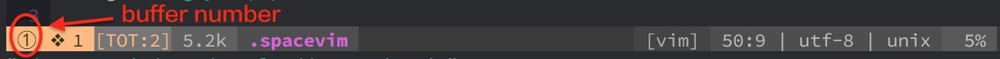
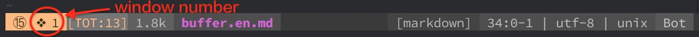

space-vim 入门
简介
space-vim 和 spacevim 和 spacemacs 都是类似的插件，用来扩展 vim 编辑器
安装 space-vim
## 前置依赖
git
Vim/NeoVim
## 安装命令
bash <(curl -fsSL https://git.io/vFUhE)
项目结构
## 配置文件路径
~/.spacevim
使用说明
buffer

| Key Binding | Mode | Description |
|---|---|---|
| SPC b 1 | Normal | switch to buffer with number 1 |
| SPC b 2 | Normal | switch to buffer with number 2 |
| SPC b 3 | Normal | switch to buffer with number 3 |
| SPC b 4 | Normal | switch to buffer with number 4 |
| SPC b 5 | Normal | switch to buffer with number 5 |
| SPC b 6 | Normal | switch to buffer with number 6 |
| SPC b 7 | Normal | switch to buffer with number 7 |
| SPC b 8 | Normal | switch to buffer with number 8 |
| SPC b 9 | Normal | switch to buffer with number 9 |
| SPC b p | Normal | switch to previous buffer |
| SPC b n | Normal | switch to next buffer |
<Tab> |
Normal | swtich to next buffer, equal to SPC b n |
<Shift-Tab> |
Normal | switch to previous buffer, equal to SPC b p |
| SPC b d | Normal | delete current buffer |
| SPC b k | Normal | kill current buffer |
window

| Key Binding | Mode | Description |
|---|---|---|
| SPC b [1-9] | Normal | move cursor to the window with number [1-9] |
| SPC w j | Normal | move cursor to the window below current one |
| SPC w k | Normal | move cursor to the window above current one |
| SPC w h | Normal | move cursor to the window left of current one |
| SPC w l | Normal | move cursor to the windows right of current one |
| SPC w J | Normal | Increase current window height downwards |
| SPC w K | Normal | Increase current window height upwards |
| SPC w H | Normal | Increase current window height rightwards |
| SPC w L | Normal | Increase current window height leftwards |
| SPC w v | Normal | split window vertically |
| SPC w 2 | Normal | 2 columns, equal to | SPC w v |
| SPC w s | Normal | split window horizontally |
| SPC w - | Normal | equal to | SPC w - |
| SPC w d | Normal | delete the current window |
| SPC w q | Normal | quit the current window |
| SPC w w | Normal | choose window |
| SPC w r | Normal | rotate windows downwards/rightwards |
| SPC w m | Normal | maximize the window in GVim |